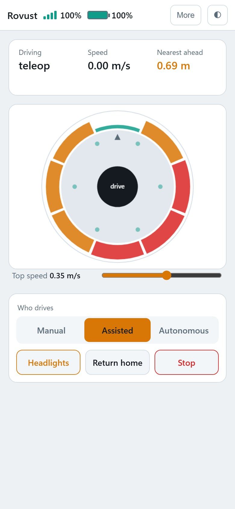

ABSTRACT
A rover that explores a place it has never seen — safely, on its own
Caves, mines, Mars, the sea floor: no map, no GPS, a radio that fails. The rover must avoid walls and pits, map what it finds, choose where to go next and come back before the battery runs out. One engine, three worlds — each world is only configuration — simulated from the motors up.

A real run — left: the cave the robot never sees · right: the map it builds by itself
3
worlds, one unchanged codebase
20+
sensors with real physics and faults
264
measured runs behind every claim
97 %
of the reachable area mapped by the AI explorer
IMPLEMENTATION · THE APPLICATION
A desktop app to watch, test and drive the rover

Truth and belief
the real world and the robot's own map, side by side.
Live data
sensors with one-click faults, the motor PID loop, the radio link, events.
Reports
one click sends the maps and numbers to the team's Drive.
English / عربي
light and dark; buttons that can't act are greyed out.
IMPLEMENTATION · REMOTE CONTROL
Drive it from a phone or a game controller



Phone or tablet
scan the QR code, drive with a joystick on the live map.
Game controller
✕ gas, △ reverse, stick to steer — USB or Bluetooth.
A radio that can fail
weaker with distance and walls; lose it and the rover drives itself back into range.
Safety stays on
in Assisted mode you cannot drive it into a wall or a pit.
RESULTS · STRATEGIES · 90 RUNS
The AI explorer won in all three worlds
| Coverage at 400 s | Cave | Mars | Underwater |
|---|---|---|---|
| Utility (AI) | 96 % | 84 % | 97 % |
| DFS + backtracking | 92 % | 72 % | 92 % |
| Nearest frontier | 69 % | 47 % | 65 % |
| Rovers lost to pits | 0 / 30 | 0 / 30 | 0 / 30 |
Confirmed: DFS is strong in the cave's corridors.
Refuted: nearest-frontier is the weakest, even in the open.
Found: information over cost wins everywhere.